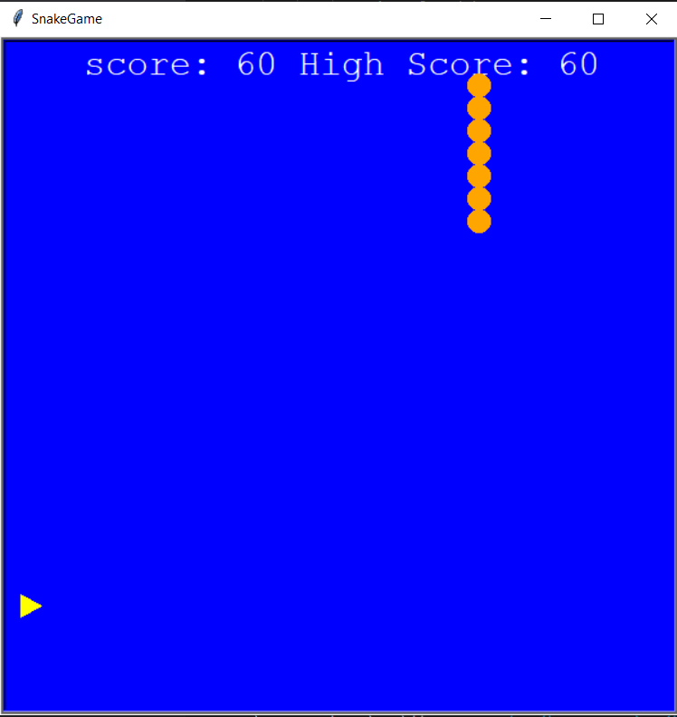

Portfolio
Home
Portfolio
About Me
This is my Portfolio Page!
Bugs and Flowers 1.1.9 Project:
For this project me and my group used Python Turtle to create a program that has bugs flying through a flower in order to change the color of the flower's petals.
Snake Game 1.2.5 Project:

For this project my group used python turtle to create a game with a snake that moves around, controled by the user, and eats apples. every time it eats an apple the snake grows in size and the score increases.
Mario Jump 1.3.1 Project:
During this project we have learned collaboration, which will help in almost any career that involves coworkers or talking to others. We also learned critical thinking/problem solving. When you can’t figure something out while working, it requires critical thinking to solve the problem. Lastly, we learned how to plan our course of action. In any career, it is always good to follow a set plan in order to finish work in an organized and efficient manner.